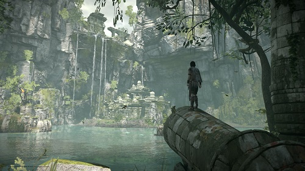
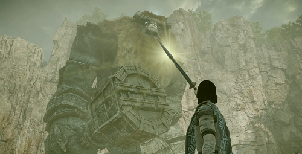

RESEÑA - SHADOW OF THE COLOSSUS (REMAKE)
A la hora de que se habla de remasterizaciones y remakes normalmente una aire negativo invade nuestros cuerpos. Lo que se esperaría de una industria dinámica y fresca es que nuevas creaciones salga para ir formando un futuro próspero, entonces es cuando entran los sentimientos encontrados, ¿por qué revivir obras que ya tuvieron su momento para brillar?, por qué los estudios buscan vendernos otra vez un juego que tenemos ahí, respetando todas las limitantes que tenía en su época. En general podríamos decir que esto sucede la mayor parte del tiempo, siempre aplaudiremos más juegos nuevos sobre lanzamientos de títulos ya existentes, pero este caso es poco usual, ya que no sólo estamos hablando de un buen juego, estamos hablando de una de las joyas de la industria que ha marcado un antes y un después dentro de la discusión del videojuego como arte, hablamos, claro, de Shadow of the Colossus.
Visto por primera vez en el 2005 para la flamante PlayStation 2, el juego volvió a aparecer en una remasterización en el 2011 para el Playstation 3 junto con ICO, otra gran obra de su creador fumito Ueda. Pues ahora, para no desentonar con una posible tradición de traer Shadow of the Colossus a todas las generaciones habidas y por haber, este clásico vuelve en un formato extraño, un híbrido entre remasterización y remake, ya que el estudio que se encarga de esta noble labor, Bluepoint Games, recreó por completo todos los modelados y demás texturas que dan vida visual al juego, sin embargo, se dejaron todo lo que hace funcionar al título tal cual se hizo hace más de 10 años. Por lo que etiquetar al juego como remake o remasterización es complicado, lo único que nos damos cuenta es que se puede ver a kilómetros, casi como si estuviéramos viendo a uno de los colosos en la lejanía, el amor y cuidado que Bluepoint Games tuvo para volvernos a meter en estas tierras prohibidas.

Hablar de la historia de Shadow of the Colossus al día de hoy es algo innecesario, además de que sería mejor que, quienes no conozcan la odisea de Wander, entren totalmente expectantes de lo que nos pueda deparar esta aventura. Lo único que diremos por puro protocolo y que es una de las premisas más sencillas y curiosas que encontramos en este medio es que nosotros, gracias a una misteriosa espada, entramos a unas tierras prohibidas donde yacen grandes criaturas. Pues para cumplir un capricho amoroso, deberemos derrotar a dichas criaturas con la ayuda de aquella misteriosa espada, nuestro arco y Agro, nuestra fiel yegua que nos acompañará a todos lados para poder recorrer estos largos parajes donde en el aire se puede espirar que, en efecto, no pertenecemos ahí.
Fumito Ueda usa un sistema muy minimalista para estructurar su juego, no se trata de qué más le puede agregar, sino que, cada elemento que vemos tiene una función específica y no le sobra absolutamente nada. Bajo ello vemos que hasta la narrativa es críptica, no nos cuentan mucho del contexto ni del trasfondo del problema, sin embargo, las conclusiones que podemos sacar son más bellas que muchos juegos que se toman su tiempo en hablarnos detenidamente para que no nos sintamos perdidos en ningún momento.
Como ya mencionamos al principio, el juego mantiene mecánicamente hablando basicamente todo lo que veíamos en la sexta generación de consolas, sin embargo, entran aquí temas que hacen un poco más fácil la experiencia para lo recién iniciados al juego. Lo admitimos, al configuración del control clásico puede ser un poco confusa para los jugadores occidentales, sin embargo, esta nueva versión nos da la posibilidad de elegir una configuración más moderna, cosa que le da más accesibilidad al título en pequeños detalles como, por ejemplo, cambiar el botón de salto del "Δ" a la "X", cosa que se acostumbra más en los juegos contemporáneos.

Fuera de eso y de, por su puesto, toda la potencia que el juego cuenta para dotarnos de vistas impresionantes, impecables 60 cuadros por segundo y un magnífico modo de fotografía, la experiencia sigue intacta. Nos hubiera encantado que este nuevo Shadow of the Colossus le agregara más elementos al juego o, por qué no, uno o dos colosos nuevos, de esos que se quedaron en el tintero, pero con lo mostrado tenemos el suficiente material para poder vivir esta joya de la industria una vez más, con todo el poder gráfico que la consola de Sony nos puede ofrecer.
Sin duda, Shadow of the Colossus es un juego que todo gamer que se toma esto de los videojuegos en serio debe de probar, y ahora que se encuentra literalmente en tres diferentes generaciones, no hay excusa para no experimentar lo que de verdad se le podría llamar una épica. Una aventura donde el viaje es más importante que, al final, conseguir los objetivos del guerrero.